Target share and snap share for every team, 2026 season
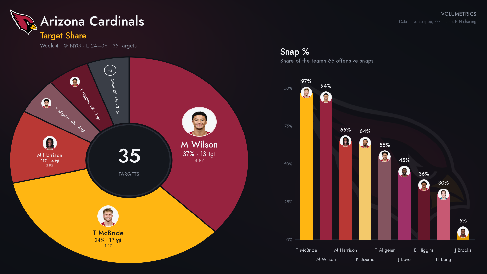
Look at how tight M Wilson and T McBride are: 13 targets to 12. T McBride actually played more snaps (97% to 94%). M Wilson also got 4 of the team's 8 red-zone targets, and that's where touchdowns come from.
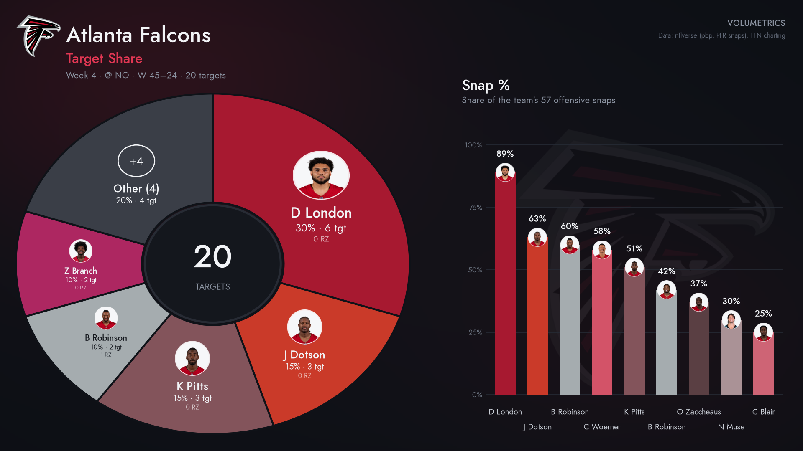
D London is the clear No. 1 here with 30% of the targets (6). Don't panic on B Robinson: 10% of the looks this week, but he was at 25% coming in and still played 60% of the snaps. I'd buy low. Only 20 targets to go around, so even a big share doesn't buy much.
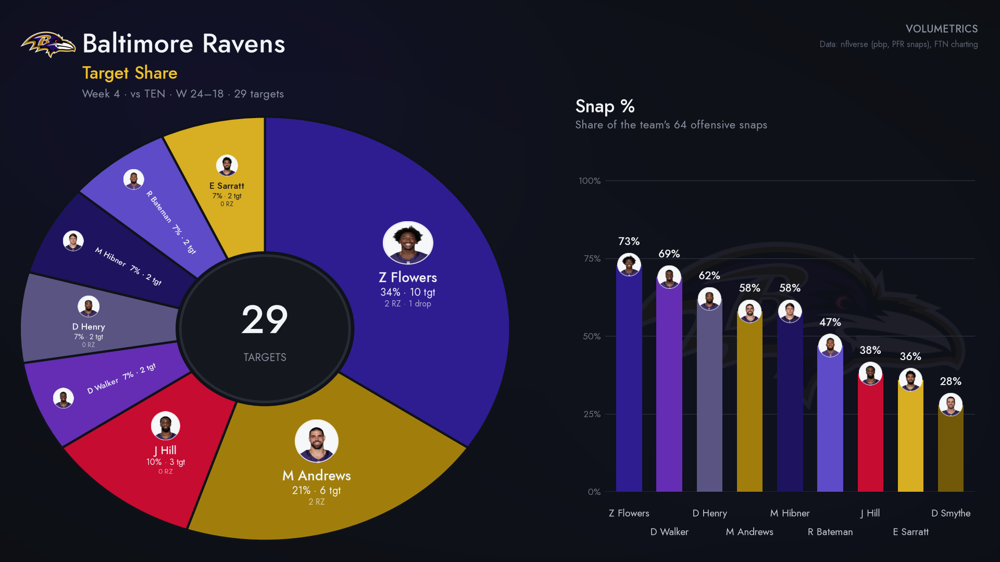
Z Flowers is the clear No. 1 here with 34% of the targets (10). Notice M Andrews earned 6 targets while only playing 58% of the snaps. That's a guy getting open when he's out there. Z Flowers also got 2 of the team's 4 red-zone targets, and that's where touchdowns come from. No wide receiver played more than 73% of the snaps, so a rotation is capping everybody's ceiling.
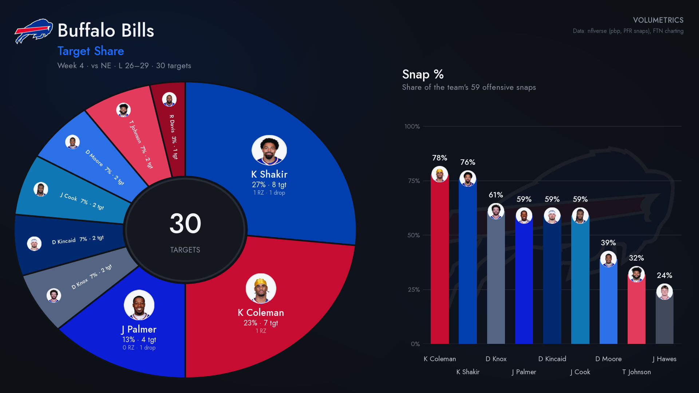
K Shakir (27%) and K Coleman (23%) are a lot closer than most people think. D Kincaid only saw 7% of the targets after averaging 21%, even on 59% of the snaps. The role is still there. This is a buy-low window.
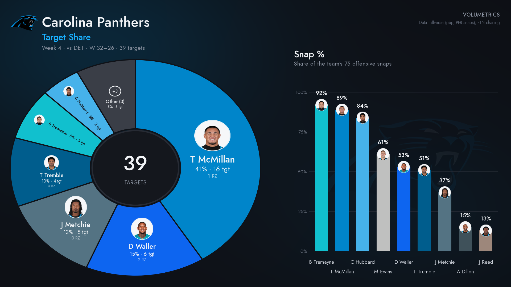
T McMillan ate 41% of the targets, 16 looks, and turned it into 14-192, 2 TDs. When a receiver clears 40% of the targets, a monster game is usually coming, and that's exactly what we got. With J Coker not taking an offensive snap, notice B Tremayne was out there for 92% of the snaps, up from 39%. The targets haven't caught up yet, but if J Coker is out another week, he's a sneaky pickup. D Waller got 2 of the team's 4 red-zone targets, and that's where touchdowns come from.
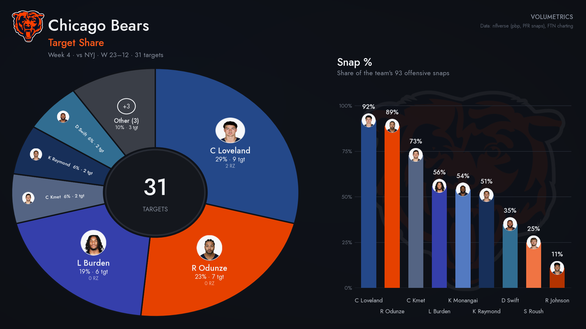
This passing game runs through C Loveland: 9 targets, 29% of the share. K Raymond only saw 6% of the targets after averaging 24%, even on 51% of the snaps. The role is still there. This is a buy-low window. Notice L Burden earned 6 targets while only playing 56% of the snaps. That's a guy getting open when he's out there. C Loveland also got 2 of the team's 3 red-zone targets, and that's where touchdowns come from.
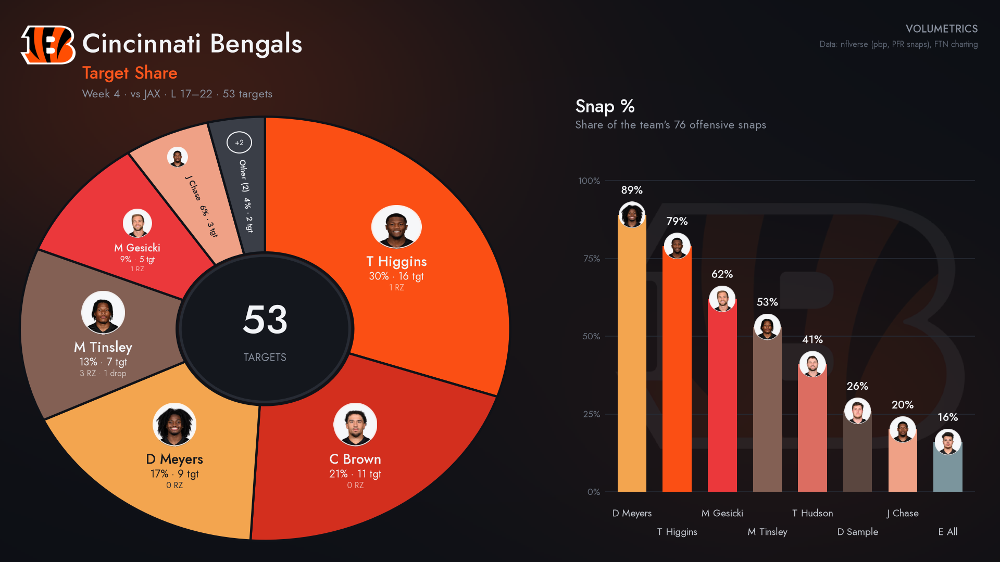
This passing game runs through T Higgins: 16 targets, 30% of the share. J Chase fell to 6% of the targets and only played 20% of the snaps after averaging 94%, so something kept him off the field. Check the injury report before reading anything into it. M Tinsley got 3 of the team's 6 red-zone targets, and that's where touchdowns come from.
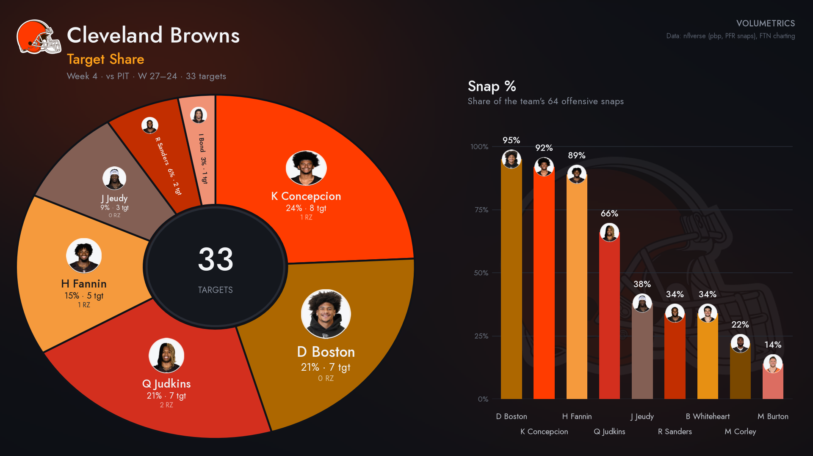
K Concepcion (24%) and D Boston (21%) are a lot closer than most people think. D Boston actually played more snaps (95% to 92%). Q Judkins' role is growing: 21% of the looks after averaging 11%. Q Judkins also got 2 of the team's 4 red-zone targets, and that's where touchdowns come from. A lot of targets spread around this week: 4 guys hit double-digit share and nobody topped 24%.
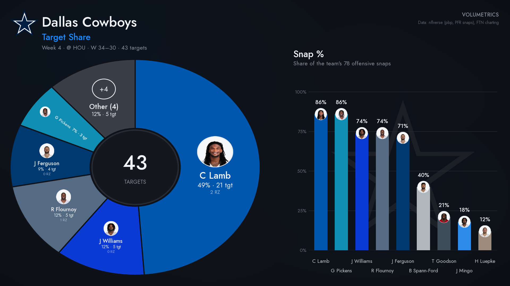
21 targets for C Lamb. That's 49% of the pie, and it went for 17-189, 1 TD. Any time a guy gets over 40% of the looks, you expect a big day, and he delivered. Don't panic on G Pickens: 7% of the looks this week, but he was at 24% coming in and still played 86% of the snaps. I'd buy low. C Lamb also got 2 of the team's 3 red-zone targets, and that's where touchdowns come from.
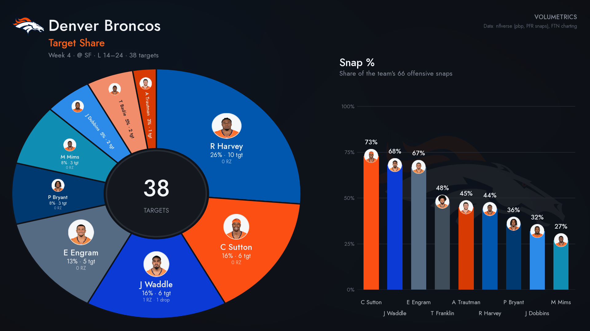
R Harvey pulled 26% of the targets on just 44% of the snaps. If that snap share climbs, he's a sneaky add. No wide receiver played more than 73% of the snaps, so a rotation is capping everybody's ceiling.
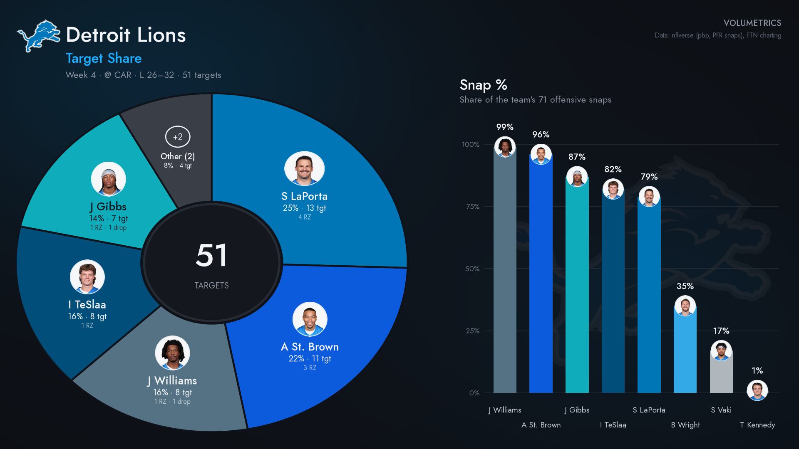
Look at how tight S LaPorta and A St. Brown are: 13 targets to 11. A St. Brown actually played more snaps (96% to 79%). 51 targets total, so this team threw a ton. Don't expect every number here to repeat.
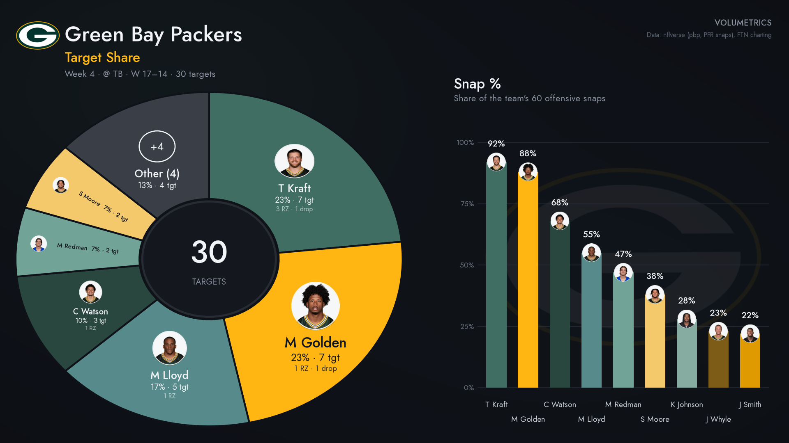
T Kraft (23%) and M Golden (23%) are a lot closer than most people think. C Watson only saw 10% of the targets after averaging 26%, even on 68% of the snaps. The role is still there. This is a buy-low window. T Kraft also got 3 of the team's 7 red-zone targets, and that's where touchdowns come from. No one dominated here. 4 different players got 10%+ of the looks, which is fine for the offense and tough for fantasy.
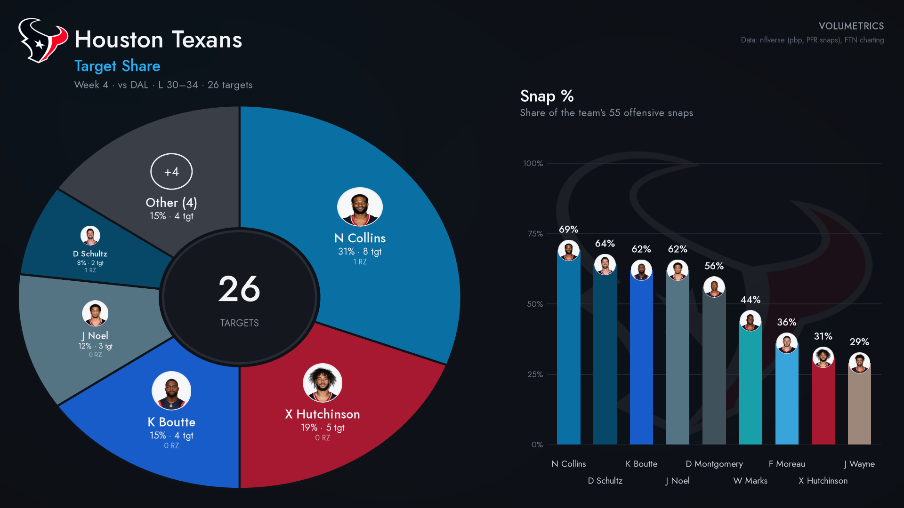
This passing game runs through N Collins: 8 targets, 31% of the share. D Schultz only saw 8% of the targets after averaging 21%, even on 64% of the snaps. The role is still there. This is a buy-low window. X Hutchinson pulled 19% of the targets on just 31% of the snaps. If that snap share climbs, he's a sneaky add.
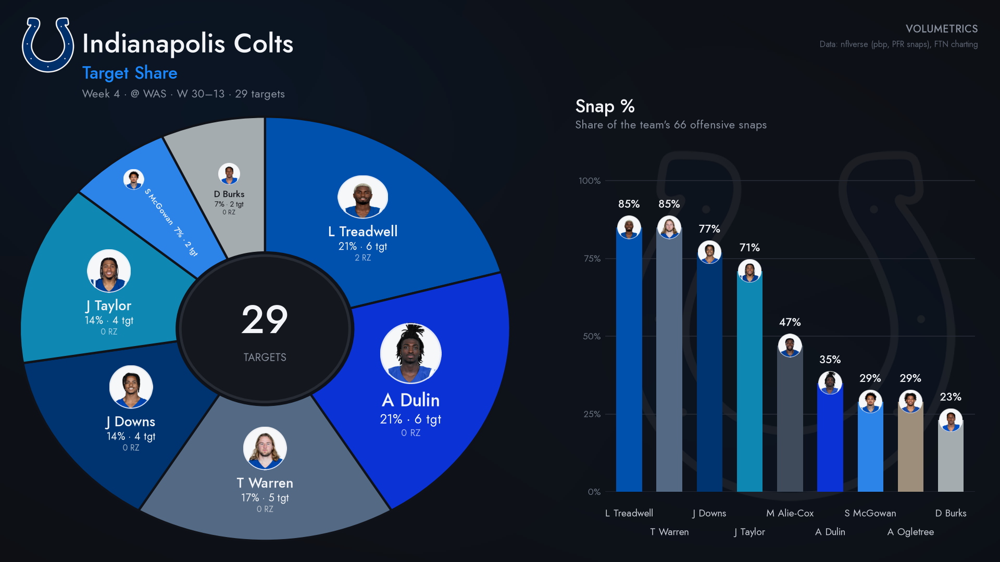
With K Allen not taking an offensive snap, A Dulin jumped to 21% of the targets after averaging 3%. If K Allen is out another week, A Dulin is a sneaky pickup. Don't panic on J Downs: 14% of the looks this week, but he was at 25% coming in and still played 77% of the snaps. I'd buy low. L Treadwell got both of the team's red-zone targets, and that's where touchdowns come from.
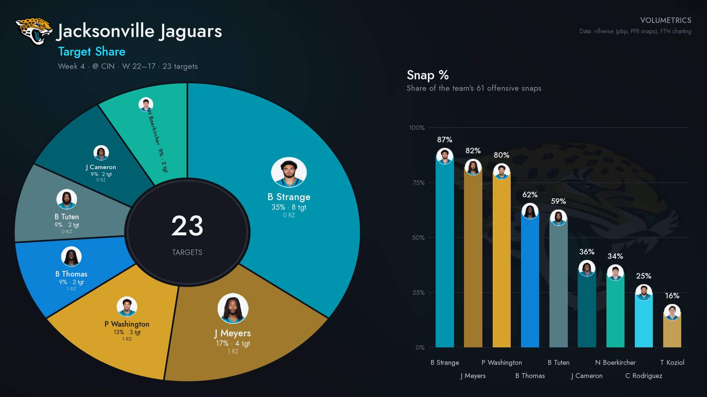
This passing game runs through B Strange: 8 targets, 35% of the share. Don't panic on P Washington: 13% of the looks this week, but he was at 30% coming in and still played 80% of the snaps. I'd buy low.
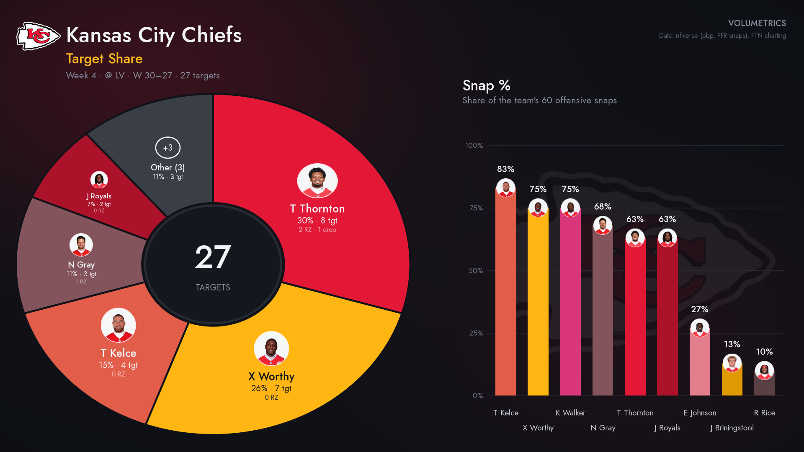
T Thornton (30%) and X Worthy (26%) are a lot closer than most people think. X Worthy actually played more snaps (75% to 63%). K Walker only saw 4% of the targets after averaging 19%, even on 75% of the snaps. The role is still there. This is a buy-low window. T Thornton also got 2 of the team's 3 red-zone targets, and that's where touchdowns come from.
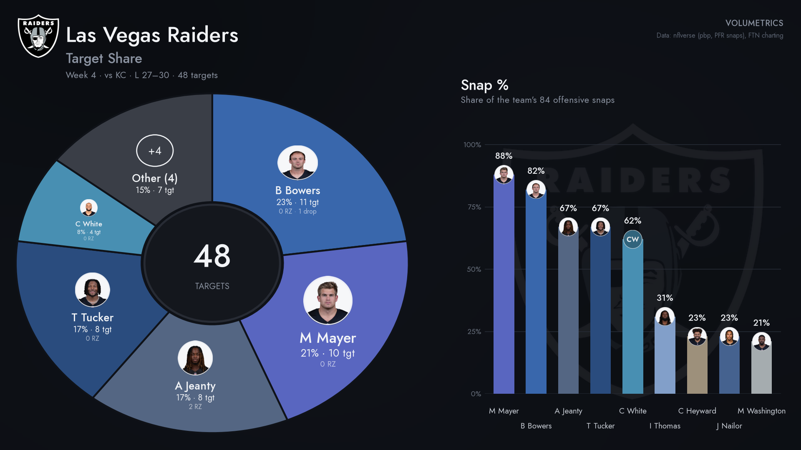
Look at how tight B Bowers and M Mayer are: 11 targets to 10. M Mayer actually played more snaps (88% to 82%). This passing offense is a mess: no receiver cleared 75% of the snaps and nobody got a real share of the targets (top guy was 23%). Hard to trust anyone here until something changes. A Jeanty got both of the team's red-zone targets, and that's where touchdowns come from.
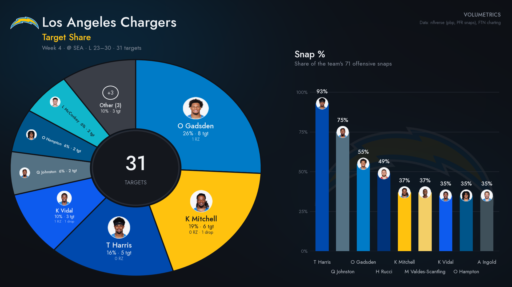
With D Njoku not taking an offensive snap, O Gadsden jumped to 26% of the targets after averaging 8%. If D Njoku is out another week, O Gadsden is a sneaky pickup. K Mitchell's role is growing: 19% of the looks after averaging 4%. Don't panic on Q Johnston: 6% of the looks this week, but he was at 20% coming in and still played 75% of the snaps. I'd buy low.
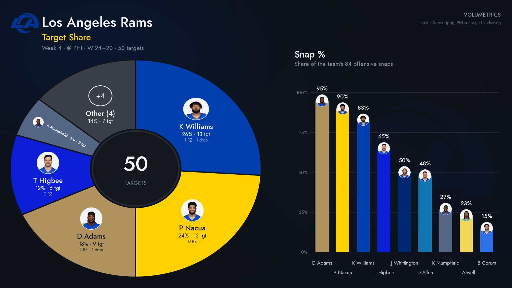
Look at how tight K Williams and P Nacua are: 13 targets to 12. P Nacua actually played more snaps (90% to 83%). D Adams got 2 of the team's 3 red-zone targets, and that's where touchdowns come from. 50 targets total, so this team threw a ton. Don't expect every number here to repeat.
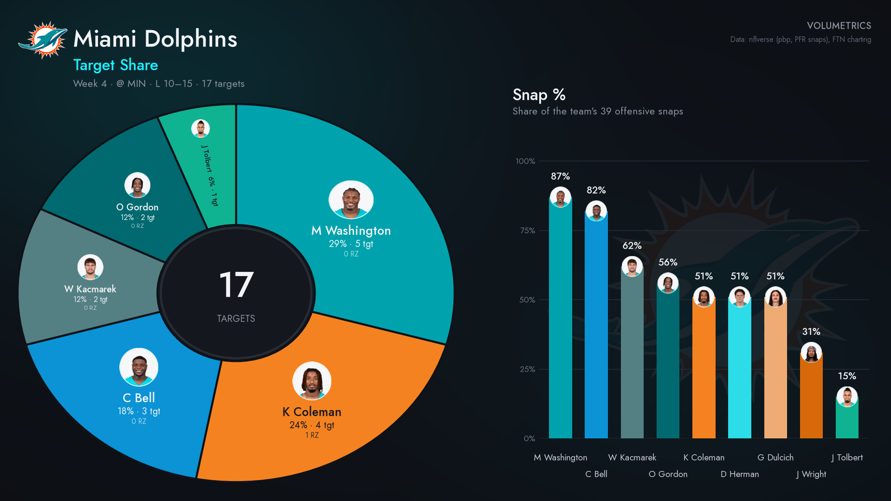
C Douglas didn't play a snap, and K Coleman is the guy who soaked it up: 24% of the targets, up from 6%. Keep him in mind if C Douglas misses more time. M Washington is the clear No. 1 here with 29% of the targets (5). Only 17 targets to go around, so even a big share doesn't buy much.
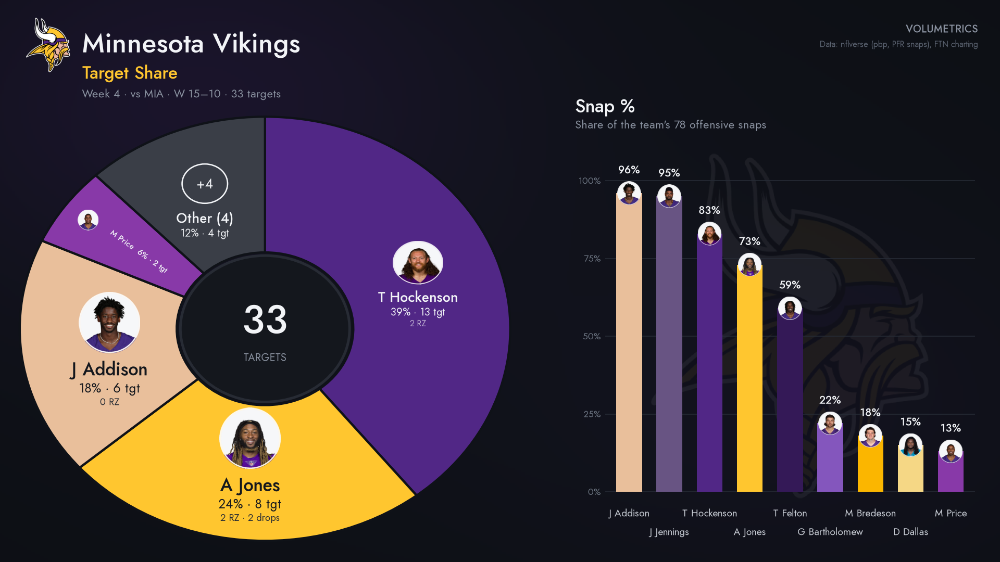
J Jefferson didn't play a snap, and T Hockenson is the guy who soaked it up: 39% of the targets, up from 20%. Keep him in mind if J Jefferson misses more time. A Jones' role is growing: 24% of the looks after averaging 9%. T Hockenson also got 2 of the team's 4 red-zone targets, and that's where touchdowns come from. J Jennings was on the field for 95% of the snaps and saw just 1 look. The routes are there; the targets aren't.
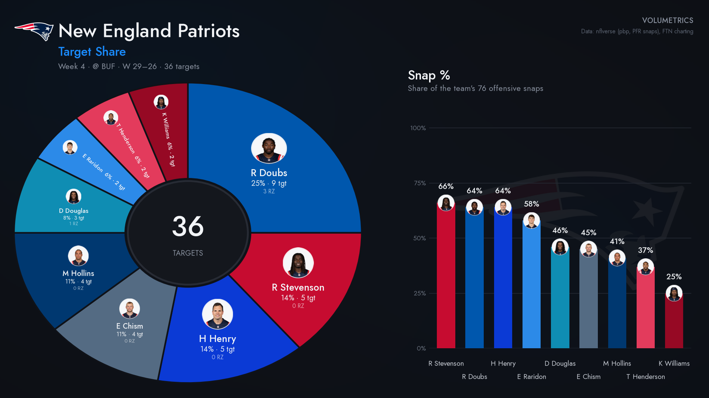
R Doubs got 3 of the team's 5 red-zone targets, and that's where touchdowns come from. No wide receiver played more than 64% of the snaps, so a rotation is capping everybody's ceiling.
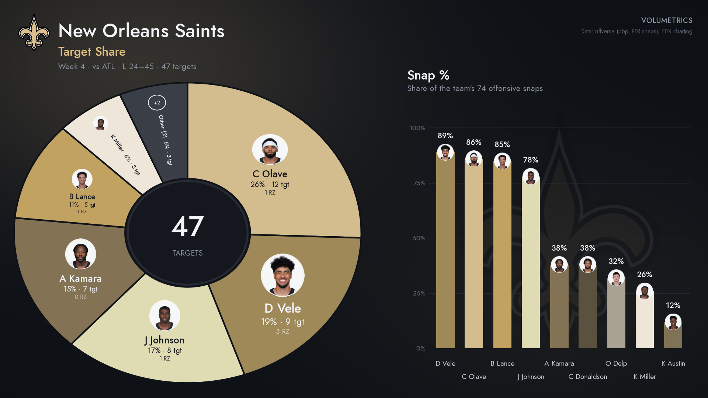
D Vele got 3 of the team's 7 red-zone targets, and that's where touchdowns come from. 47 targets total, so this team threw a ton. Don't expect every number here to repeat.
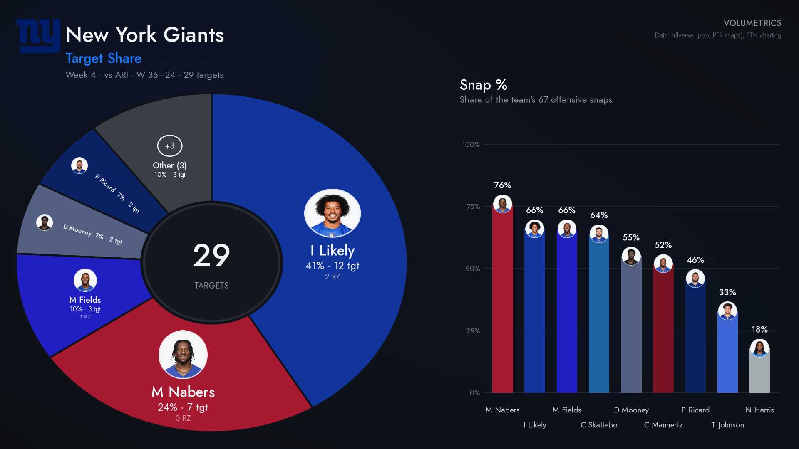
12 targets for I Likely, 41% of the team's looks, and only 7-66 to show for it. I don't care about the box score here; the volume is elite. I Likely also got 2 of the team's 4 red-zone targets, and that's where touchdowns come from.
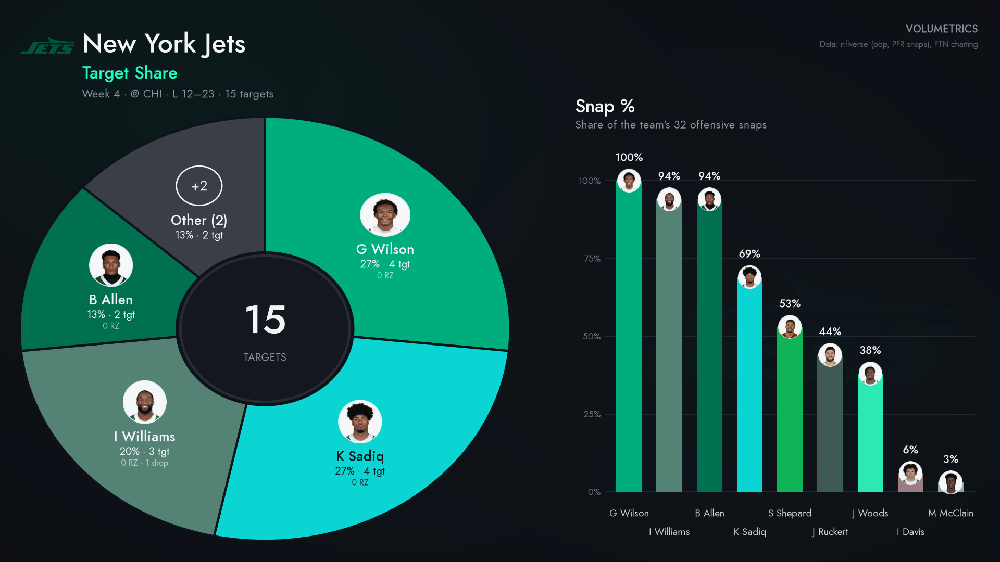
With A Mitchell not taking an offensive snap, K Sadiq jumped to 27% of the targets after averaging 15%. If A Mitchell is out another week, K Sadiq is a sneaky pickup. Notice I Williams is trending up: 20% of the targets this week vs 9% coming in. Only 15 targets to go around, so even a big share doesn't buy much.
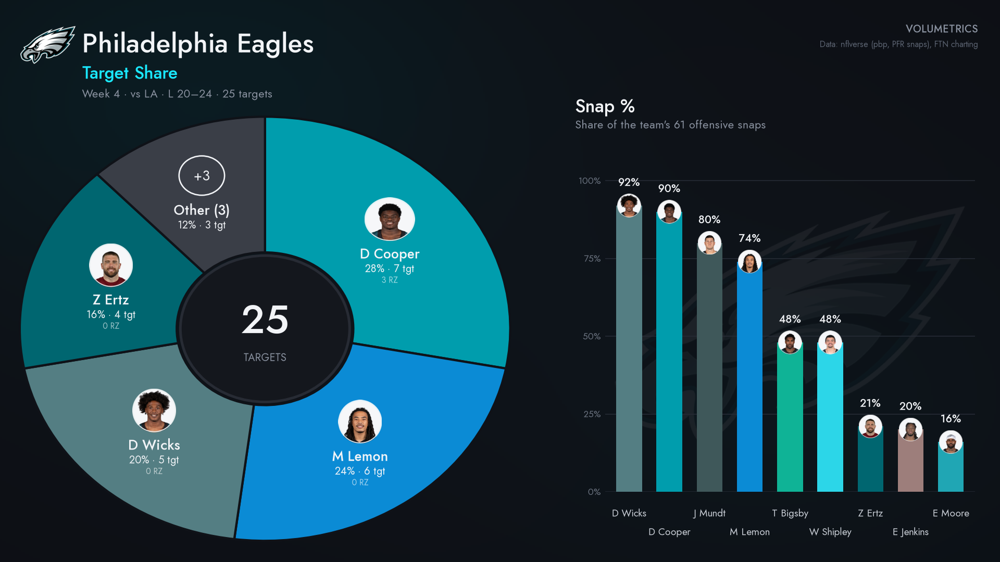
With D Smith not taking an offensive snap, D Cooper jumped to 28% of the targets after averaging 3%. If D Smith is out another week, D Cooper is a sneaky pickup. M Lemon's role is growing: 24% of the looks after averaging 12%. D Cooper also got all 3 of the team's red-zone targets, and that's where touchdowns come from. Notice J Mundt actually played 80% of the snaps and didn't get a single target.
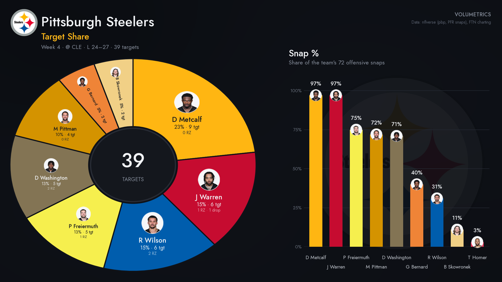
No one dominated here. 6 different players got 10%+ of the looks, which is fine for the offense and tough for fantasy. J Warren had 6 targets out of the backfield (15%). That's real PPR value.
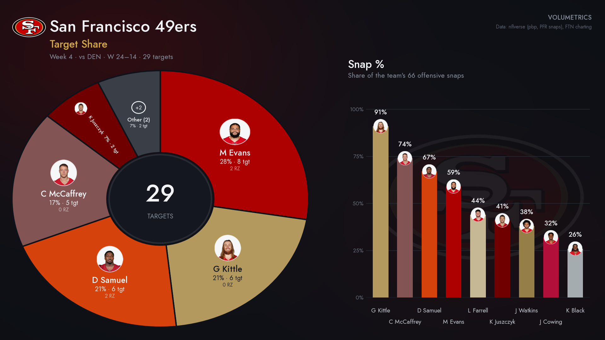
Notice M Evans earned 8 targets while only playing 59% of the snaps. That's a guy getting open when he's out there. M Evans also got 2 of the team's 4 red-zone targets, and that's where touchdowns come from. No wide receiver played more than 67% of the snaps, so a rotation is capping everybody's ceiling. C McCaffrey had 5 targets out of the backfield (17%). That's real PPR value.
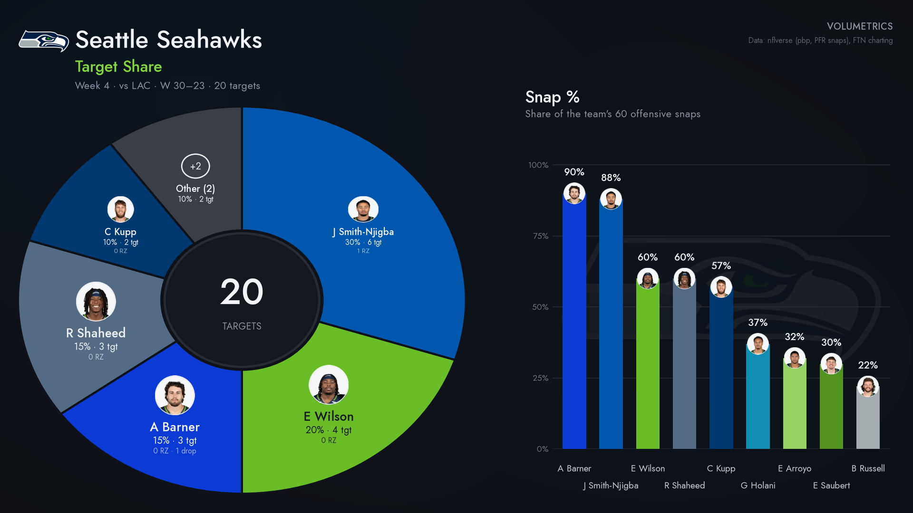
This passing game runs through J Smith-Njigba: 6 targets, 30% of the share. E Wilson's role is growing: 20% of the looks after averaging 1%. Only 20 targets to go around, so even a big share doesn't buy much.
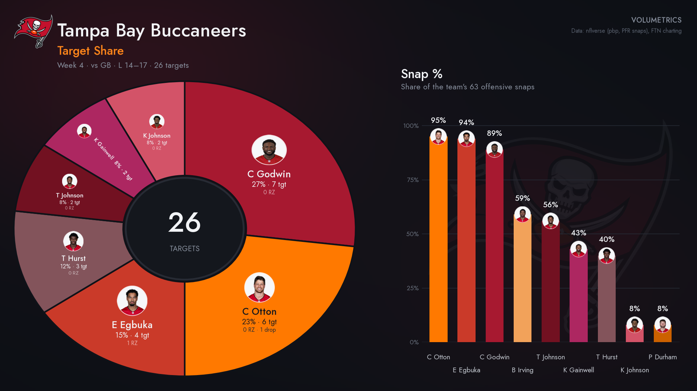
Look at how tight C Godwin and C Otton are: 7 targets to 6. C Otton actually played more snaps (95% to 89%).
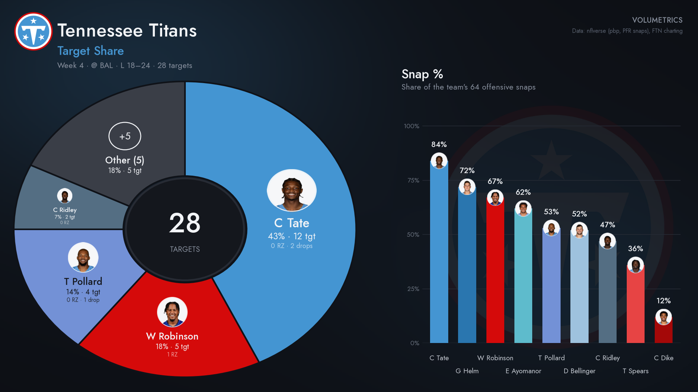
12 targets for C Tate. That's 43% of the pie, and it went for 9-145. Any time a guy gets over 40% of the looks, you expect a big day, and he delivered. C Tate did drop 2 balls, which is the kind of thing that costs you targets if it keeps up.
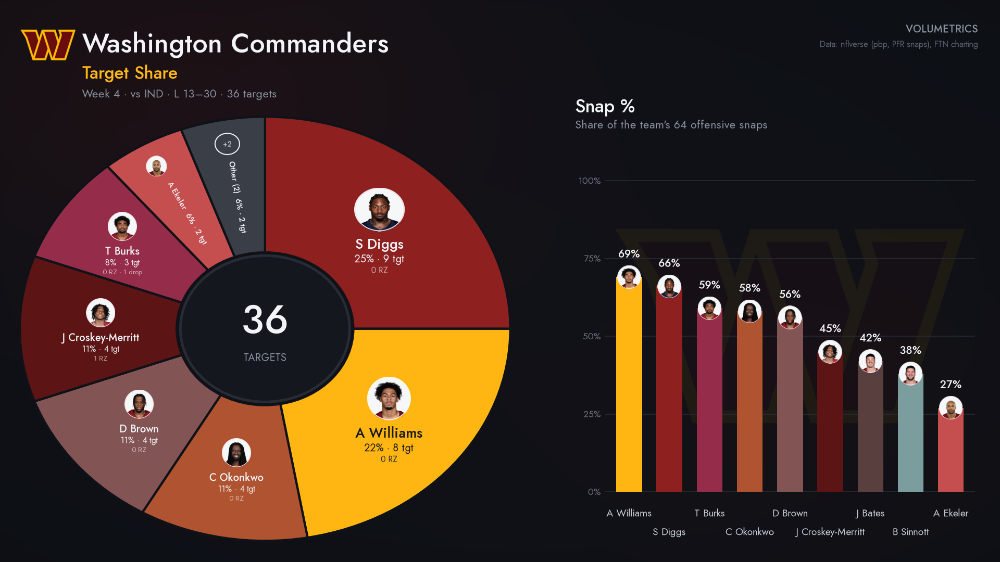
With T McLaurin not taking an offensive snap, A Williams jumped to 22% of the targets after averaging 12%. If T McLaurin is out another week, A Williams is a sneaky pickup. No wide receiver played more than 69% of the snaps, so a rotation is capping everybody's ceiling.